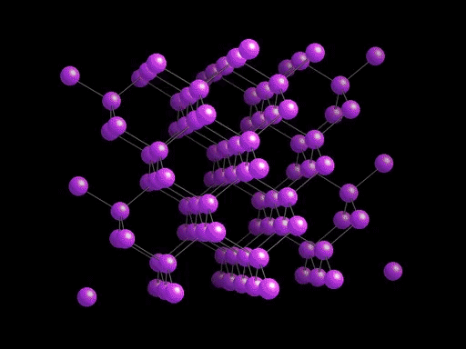

Chemical bonds
Covalent Networks
Typical covalent network solids:
- are very hard,
- usually do not conduct electricity, and
- have high melting and boiling points.

Diamond is a form of carbon. It is the hardest naturally occurring mineral.